Choose what the clock says.
Add hours, minutes, seconds, AM/PM, separate digits, day and month names, day numbers or a custom date. Pick the system, 12-hour or 24-hour time format.
HHMMDAYDATE
REI / CLOCK CREATOR
The visual editor gives each part of a lockscreen its own layer. Place the time, art, shapes and live widgets on the canvas, then tune how every piece looks and moves.
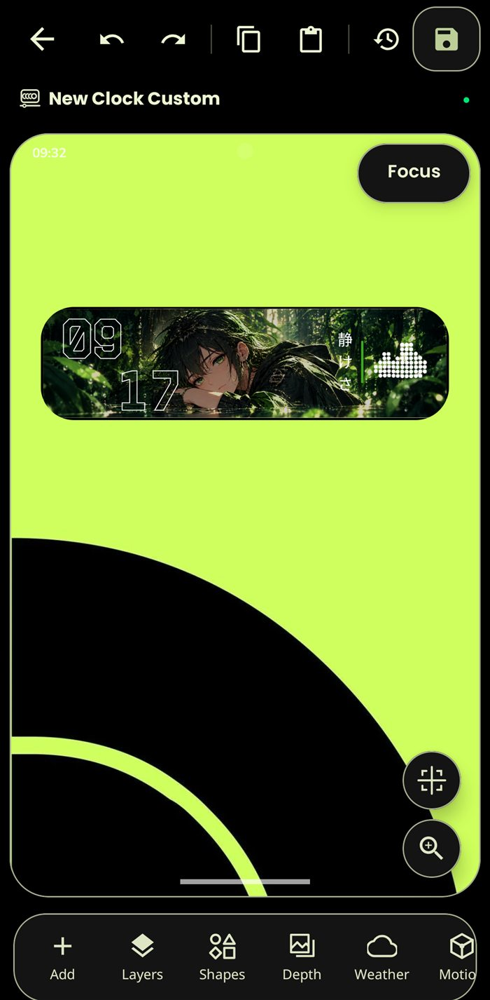
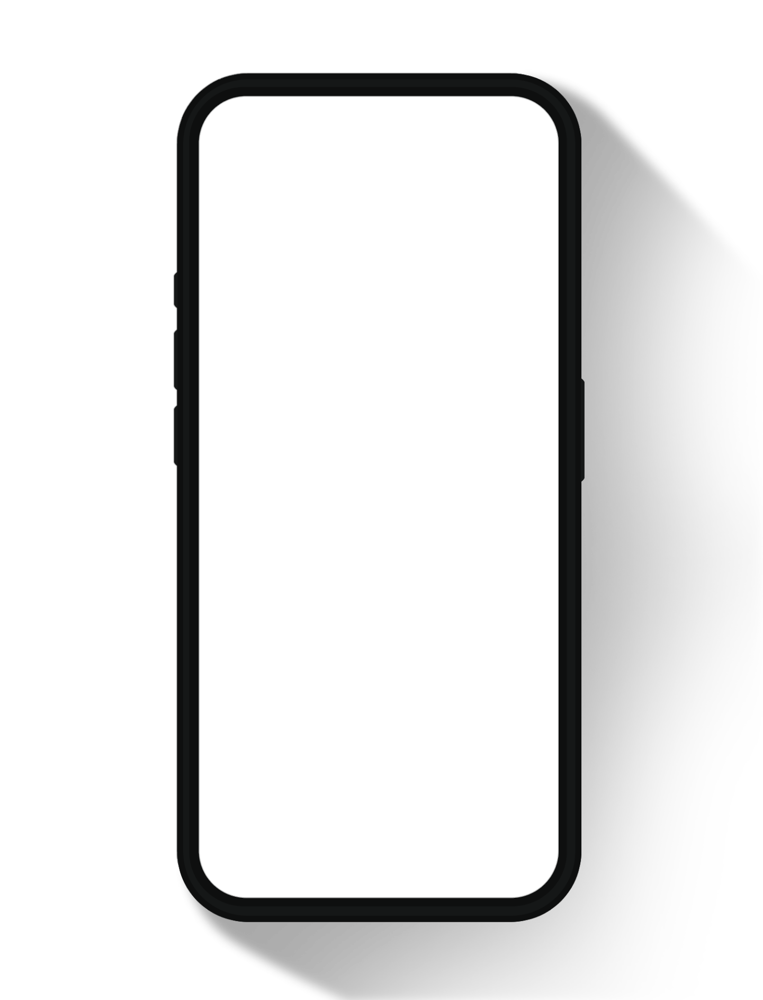
BUILDING BLOCKS
Each item you add becomes a layer on the clock. Start with a time or date field, then mix in artwork, useful information and decoration.
Add hours, minutes, seconds, AM/PM, separate digits, day and month names, day numbers or a custom date. Pick the system, 12-hour or 24-hour time format.
Place text, kinetic text, images and shape layers. The shape library includes cards, circles, lines, rings, stars, hearts, arrows and more.
Add weather text or icons, battery and alarm details, greetings, tasks, music controls, companion layers and saved widget groups.
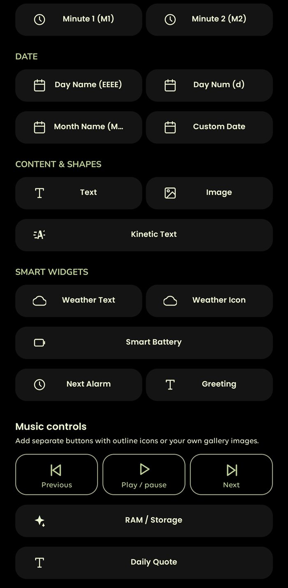
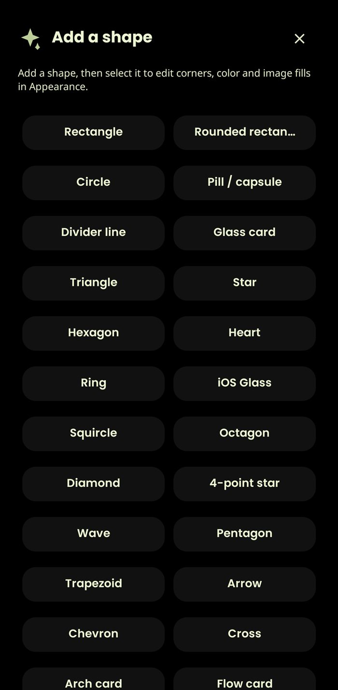
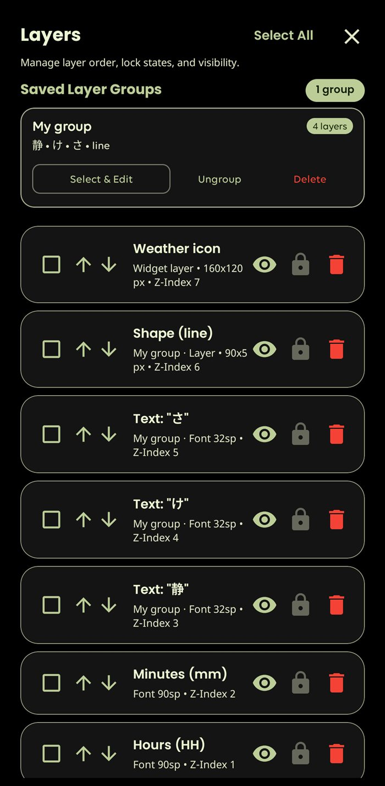
STAY ORGANIZED
Open Layers to see the clock’s structure and select the exact piece you want to change. Raise or lower its order, hide it, lock it in place, or remove it.
FINE CONTROL
Select any layer on the canvas to open its controls. The editor keeps the preview visible while you adjust that one element.
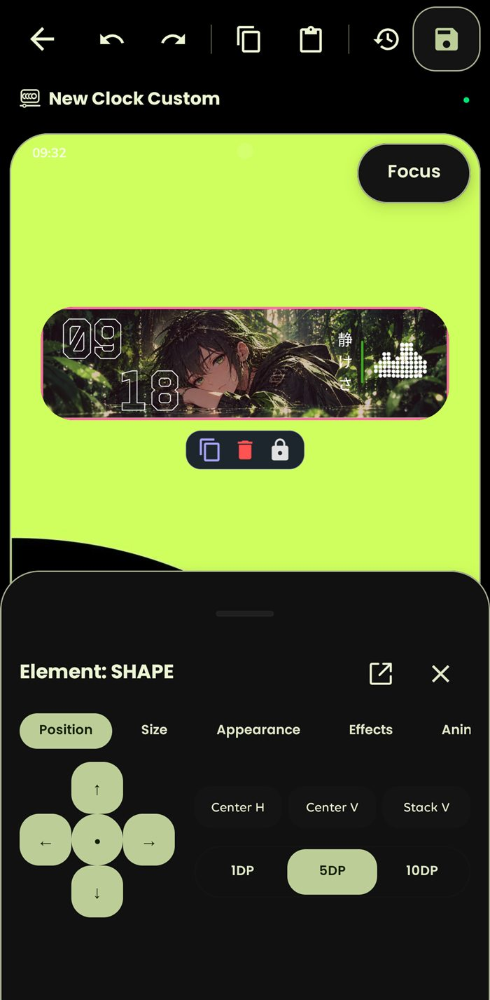
Nudge a selected element up, down, left or right. Center it horizontally or vertically, stack items, and choose a 1, 5 or 10 dp movement step.
Size, appearance and effect controls are organized alongside the element’s position and animation settings.
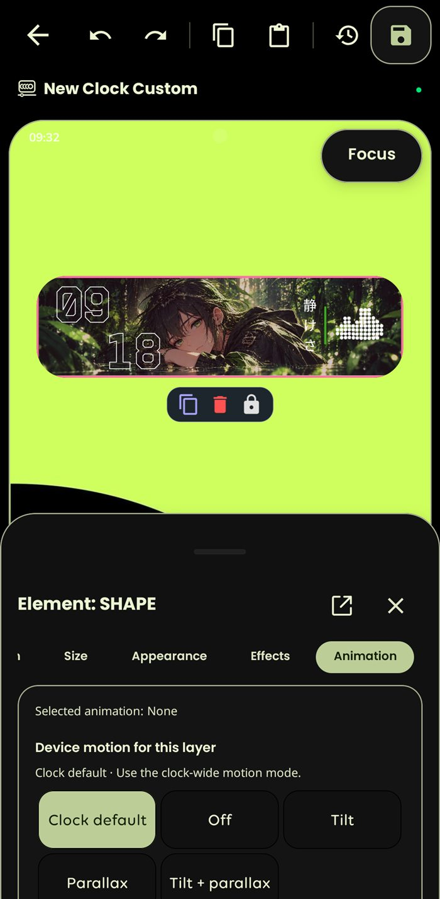
Keep the clock-wide motion setting, turn motion off for a layer, or choose tilt, parallax, or both. This lets background, artwork and text react with different depth.
Tap, double-tap and hold actions can also be assigned to an element, with visibility options for context-aware layers.
MORE TO MAKE YOURS
Go beyond the clock face. These panels add live information, atmosphere and responsive motion, with controls to fit each lockscreen to your style.
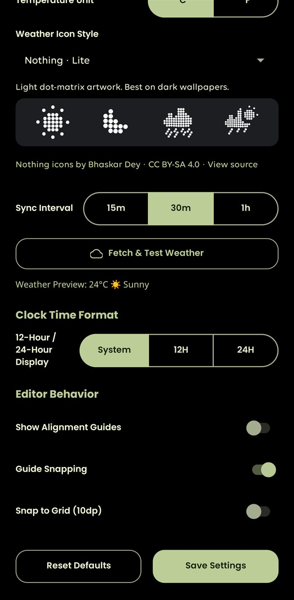
Add weather icons and details, choose an icon style and temperature unit, and set how often the forecast refreshes. Add rain, snow, fog, aurora and other atmosphere from the Nature controls.
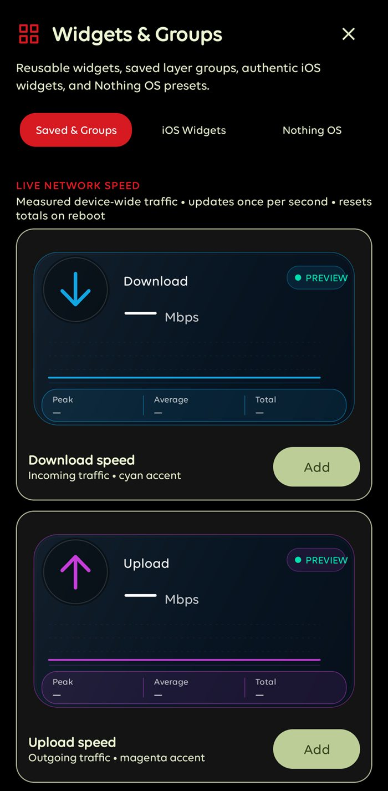
Browse saved groups and widget presets, then place them on the clock. Network speed cards can show download and upload in Mbps; each widget sits in the layer stack so you can position, resize and style it.
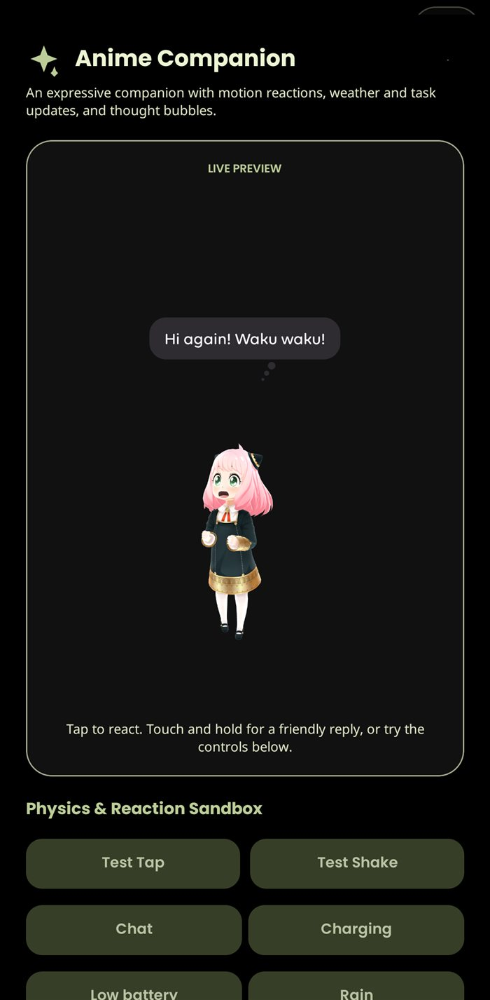
Choose from six models—Anya, Homare, Miku, Puff, Zoro or Pikachu—and place one as its own clock layer. Configure touch and motion responses, and let its message bubbles react to companion states and supported clock events.
SIX 3D COMPANIONS
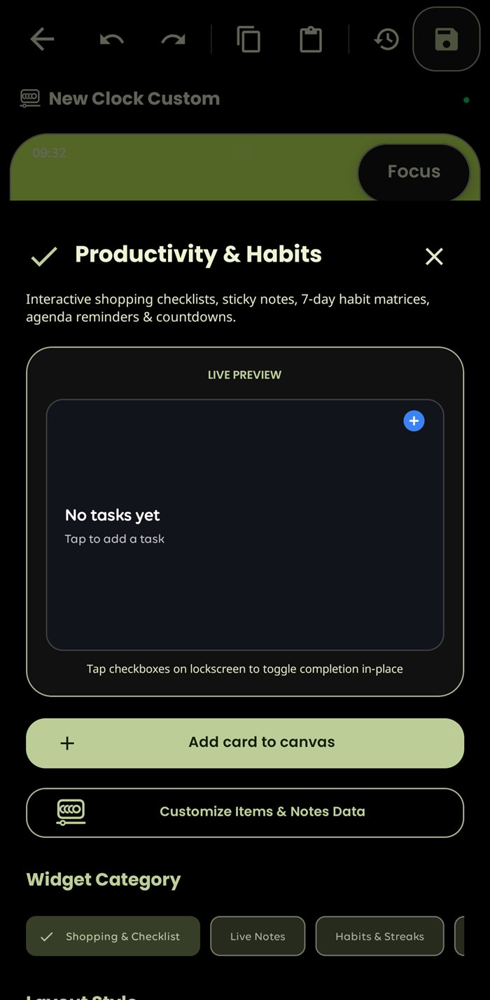
Add checklists, sticky notes, habit tracking, agenda reminders and countdowns. Checklist items can be marked complete from the lockscreen, keeping everyday tasks close at hand.
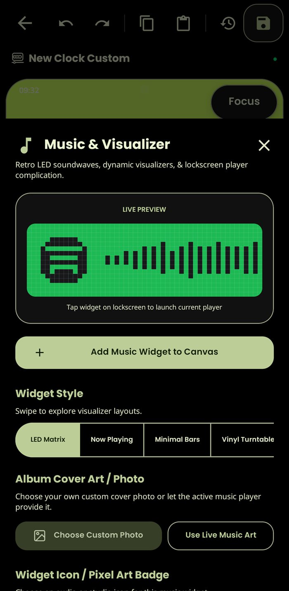
Choose a Now Playing card or visualizer, from minimal bars to a vinyl turntable. Use available album artwork or a custom cover, and keep playback controls accessible from the lockscreen.
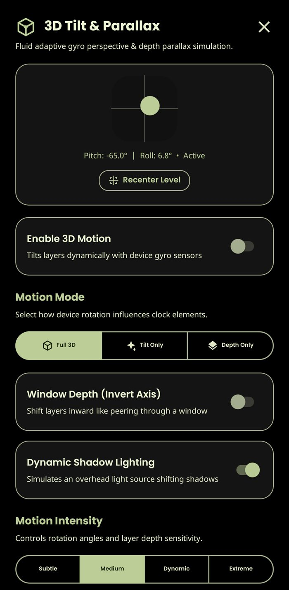
Use the device gyroscope for tilt and parallax. Pick a motion mode and intensity, with depth and dynamic shadow lighting that help separate foreground art from the wallpaper.
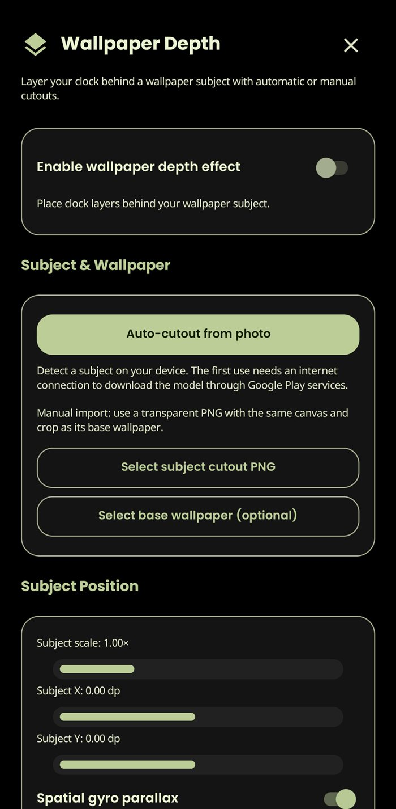
Use an automatic subject cutout or supply a transparent image over a base wallpaper. Adjust the subject’s position and scale, then pair the layers with gyro parallax for a spatial effect.
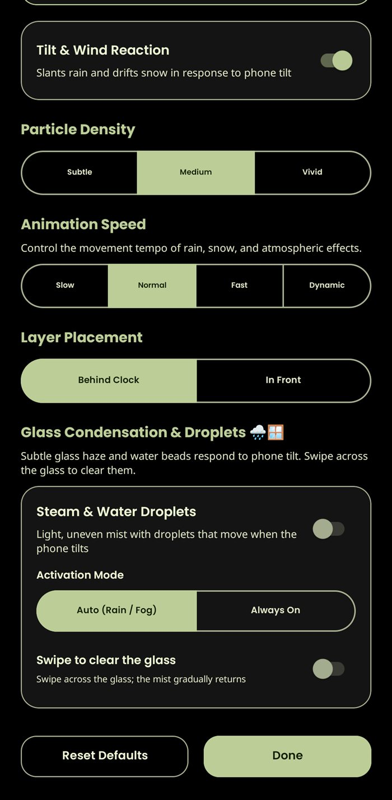
Choose effects such as rain, snow, stars, sunbeams, fog, aurora or fireflies. Set particle density and speed, react to tilt or wind, and choose whether effects sit behind or in front of the clock. Condensation and droplets can respond to tilt and be cleared with a swipe.
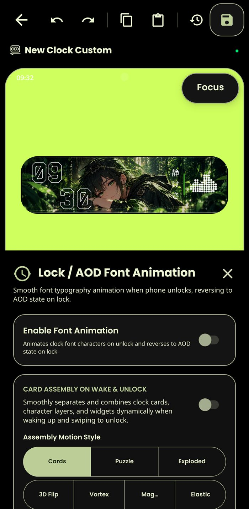
Choose supported clock and always-on display animation behavior, then arrange how cards assemble during wake or unlock. Styles include cards, puzzle, exploded, 3D flip, vortex, magic and elastic, with a timeline to tune motion per layer.
MAKE A START
Start with a blank canvas, a saved group or a clock you already like. Every layer is there to help you shape the final lockscreen.